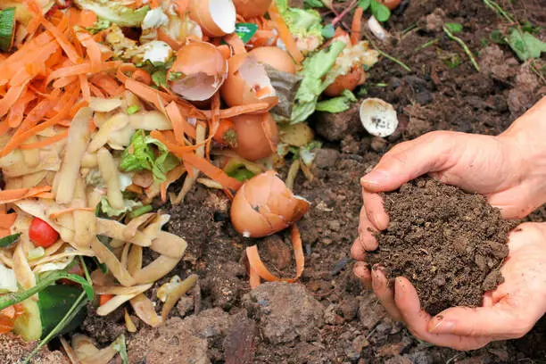

Use Reusable Bags
Using reusable bags is a simple yet powerful way to reduce waste and protect the environment. Instead of
using single-use plastic or paper bags, reusable bags can be used again and again, which helps cut down on
pollution and saves resources.
Why Use Reusable Bags?
- Reduce Plastic Waste: Plastic bags often end up in oceans and landfills, harming
wildlife and taking hundreds of years to break down.
- Protect the Environment: Producing plastic bags uses fossil fuels and water,
contributing to pollution and climate change.
- Save Money: Many stores charge for plastic bags, so bringing your own reusable bags can
help you save money over time.
- Durability: Reusable bags are stronger and can carry more items than flimsy plastic
ones.
- Support Sustainability: Using reusable products supports a more eco-friendly lifestyle
and encourages responsible habits.
How to Use Reusable Bags
- Bring them when you shop: Keep them in your car, purse, or backpack so you don’t
forget.
- Clean them regularly: Wash your bags to keep them hygienic, especially after carrying
food.
- Use different bags for different needs: For example, cloth bags for groceries,
insulated ones for cold items, and foldable ones for everyday use.
- Encourage others: Talk to friends and family about the benefits of reusable bags and
inspire them to switch too.
Making the switch to reusable bags is a small change that can make a big difference.

Save Water: How and Why
Why Save Water?
- Protect the environment: Water is a limited resource, and saving it helps preserve
lakes, rivers, and wildlife.
- Reduce energy use: Treating and pumping water requires energy. Using less water also
means using less energy.
- Save money: Using less water can lower your utility bills.
- Prevent water shortages: In many areas, water is becoming scarce due to droughts and
population growth.
- Support future generations: Saving water ensures that there will be enough for the
future.
How to Save Water
- Turn off the tap while brushing your teeth or washing your hands.
- Fix leaks – A small drip can waste gallons of water each day.
- Use water-efficient appliances like low-flow showerheads and toilets.
- Collect rainwater for watering plants.
- Water plants early in the morning or late in the evening to reduce evaporation.
- Only run dishwashers and washing machines with full loads.
Saving water is an easy habit that helps the planet and your wallet.
Go Digital: How and Why
Why Go Digital?
- Save paper: Using digital tools reduces the need for printing, which helps save trees
and protect forests.
- Reduce waste: Digital files don’t create physical waste like paper and ink cartridges
do.
- Save time: Digital tools make it easier and faster to share, store, and organize
information.
- Improve access: You can access your files, documents, and media anytime, from anywhere.
- Be more efficient: Digital processes can automate tasks and increase productivity.
How to Go Digital
- Use cloud storage – Save your documents online to access them from any device.
- Take notes on a device instead of using notebooks or loose paper.
- Switch to online billing and banking to reduce paper use.
- Scan documents and store them digitally instead of printing.
- Use digital communication tools like email, messaging apps, and virtual meetings.
- Read e-books or digital newspapers instead of printed ones.
Going digital helps you stay organized, save resources, and protect the environment.

Compost Food Waste: How and Why
Why Compost Food Waste?
- Reduce landfill waste: Composting helps divert food scraps from landfills, reducing the
amount of waste that ends up there.
- Enrich soil: Compost adds nutrients back into the soil, improving its structure and
fertility.
- Reduce greenhouse gas emissions: Food waste in landfills produces methane, a harmful
greenhouse gas. Composting helps reduce these emissions.
- Save money: By composting, you can create your own natural fertilizer for gardens and
plants, reducing the need to buy store-bought products.
- Promote sustainability: Composting is a key part of sustainable living and helps close
the loop in the food system.
How to Compost Food Waste
- Separate food scraps: Collect fruit and vegetable peels, coffee grounds, eggshells, and
other organic matter.
- Avoid meat and dairy: These items don’t compost well and can attract pests.
- Create a compost bin: Set up a composting system in your yard or use a compost bin for
indoor composting.
- Balance greens and browns: Mix green materials (like fruit and vegetable scraps) with
brown materials (like leaves, cardboard, and paper) to create the right conditions for composting.
- Turn the compost: Mix the compost regularly to help it break down evenly and speed up
the process.
- Use the finished compost: Once the compost is dark and crumbly, use it to enrich your
garden or plants.
Composting is a simple, effective way to reduce waste and improve the environment.